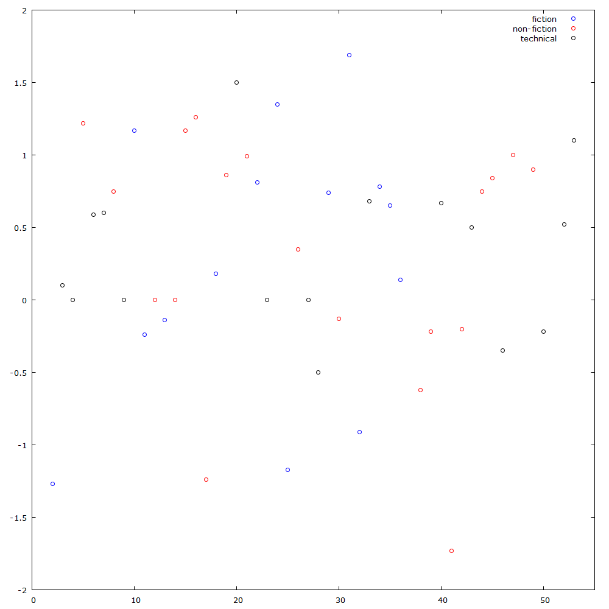

Michal Paszkiewicz
#2 year of languages - ruby
So, following my first post from my year-of-languages series of posts (where I learnt some fortran), I decided to try ruby for #2.
How I selected a project
Since having analysed my reading speed in the last post in this series (from my goodreads data), I have wondered about what else I could see from that data. The first thing that sprung to my mind, was that it would be interesting to see if I gave higher ratings to the books I read in comparison to other readers. So this was the project that I would put my newly acquired ruby skills to.
What I think about Ruby
I like it. I really, really do. I may be slightly annoyed that I have to write "end" all over the place, but there are so many things about the language that make up for this. I like the duck typing (yes, I AM one of those weirdos who like JavaScript). I like the modules. Lambda syntax is neat for multi-line algorithms. The libraries are awesome. As soon as I touched on the CSV library I was surprised with how easy it was to manipulate CSVs. Sure, I may have had some trouble with discovering that I needed to stick ":row_sep => :auto" all over my code, but even then this was a relatively short-lived problem. Generally speaking, it was a pleasure writing Ruby code.
Results
Once again, I have put this code on github. I drew a graph (as always), of my ratings against book number. There was little to be analysed from this, really.
My Rating difference to Average Rating of book against book number of the year
I modified the code to output the average rating difference per genre. From this, I found:
| Difference | |
|---|---|
| Fiction | +0.270 |
| Non-Fiction | +0.313 |
| Technical | +0.324 |
| Total | +0.304 |
Overall, I am a generous reviewer. I am likely to give a book a better rating than the average reader by 0.304 stars. Not bad, considering that there are only 5 stars, making this >6% of a better rating. I also give more technical books higher ratings - so I clearly must enjoy reading technical books more than other people. Or perhaps I am horribly pretentious and scoring more advanced books higher scores to attract attention to the kinds of books I am reading.
I must be a terrible person.
published: Sun Feb 05 2017